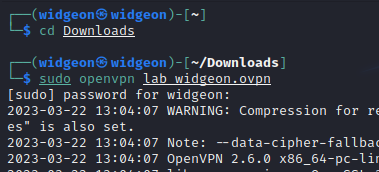
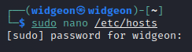

Play Book
Capture the Flag
There are many types of Capture the Flag (CTF) challenges. This website focuses on black-box penetration testing challenges, where you are given minimal information about the target—typically just an IP address and whether it's a Linux or Windows machine. Your goal is to gain access, retrieve the user.txt flag, and escalate privileges to obtain the root.txt flag.
Setting Up
Step 1: VPN
After you understand the rules of the CTF platform you may need to install or download a VPN. Once the download is complete, navigate to your downloads folder and start the vpn using sudo. You won't be able to access the IP's or challenge without doing this, so do not forget and waste your time.
Foothold
Foothold is just a term used to describe the initial entrance as an external source to become an internal source
Foothold Could Be:- A set of login credentials that you can now use to ssh into the machine
- A spot to upload a reverse shell that executes
- An XSS exploit that gives you a shell
- Misconfigured service used to gain access
Step 1: Nmap
Start your initial enumeration of the target IP. This is your nmap scan.
A good scan to start off with is "nmap -sV -sC
Then it will save the results into a file so that you can look at them again later without worrying about loosing that terminal, or taking the time to scan again.
Step 2: Analyze Your Nmap Results and Google
If you are doing a Hack the Box room, and port 80 is open, meaning there is a website, you will need to add the IP and URL to your /etc/hosts file.
You will need to use sudo in order to edit this file.
You can use "sudo nano /etc/hosts" (or any of your preferred text editor) to edit the file from any directory in the terminal because /etc is a default directory and can be accessed anywhere.
If you are just starting out with CTF's, google every port and every service that you are unfamiliar with.
Here are some googling tips to help you with your search.
Step 3: Run Service Specific Scans
Based off the open ports, you now have an idea of what scans you should run next.
Here is a list of scans you can run designed for specific ports.
Generally, this is where you want to start with Gobuster, FFUF or other scans to enumerate a website.
Step 4: Go for Low Hanging Fruit
If your IP has a website, while your scans are running, you should be looking around the website for anything you can interact with.
- This can be a login/sign up page, somewhere to upload/download files, a comment section, shopping carts, forgot password, etc.
- Try common credentials to log in to any pages such as admin:admin
- If you can see what was used to make the website, google if there is any credentials specific to that platform as well as any known vulnerabilities
- Did your nmap results show any versions that have specific CVE's?
- Try using Searchsploit to see if there is any existing exploits that work straight from an online resource.
- Be on the lookout for any names on the website. This could be the username you may end up gaining access with!
Step 5: Run Service Specific Exploits
If you can't find any easy access points you'll have to use another type of exploit or chain of events to gain access.
This is where you start looking for any POC's (Proof of Concept) and code on exploit-db to find vulnerabilities in the specific version of software you are looking at.
Keep in mind if you're working on a website like HackTheBox, the difficulty of finding a working POC will also increase. Sometimes you will have to put together your own code with the guidance of an article describing the process, rather than taking code straight from github. When working on a CTF, you know there is a valid path to get in, so you can use that to your advantage. There is something that works. Once you've found the exploit that works, congratulations you have your foothold.
- Example
- • If you find that the website is using SQL in anyway, you can now use SQLMap. This can dump the table information such as usernames and passwords which you can then use as your foothold.
- • Use WPScan if you see WordPress
Step 8: User.txt
Regardless of OS, flags are normally kept in the /Desktop folder. Navigate there and check if your flag is there.
Lateral Movement and Privilege Escalation
The process of going from a user with limited privileges to a user with more privileges is called privilege escalation. The process of going from a user with limited privileges to a different user with similar privileges is called lateral movement.
Sometimes the difference between the two is not immediately apparent. You may have to get root access on one machine so you can pivot into user access on a different machine. This other machine may have the same level of privileges, but is part of a different network. The real target may require you to root several machines to get to your end goal.
This could be going from www-data to a user, from user to root, or from user to user to user to root.
Step 1: Users Sudo Privileges
You need to check what you are able to do as sudo. You do this with: sudo -l Investigate the output. Either you will be able to run sudo or you won't. If there is something you can run as sudo, you should investigate. If it is a script, read it and see if you can get an understanding of what it is doing. If it is not a script, check out GTFOBins to see if any of the techniques may work.
Step 2: Lin/WinPEAS
Get Lin/WinPEAS onto your target machine. You may be able to download directly or you may need to use a file transfer method Here is more about LinPEAS Here is more about WinPEAS
Step 2: Lin/WinPEAS
Get Lin/WinPEAS onto your target machine. You may be able to download directly or you may need to use a file transfer method Here is more about LinPEAS Here is more about WinPEAS
Step 3: Go For Low Hanging Fruit
This will typically be highlighted in yellow/red in LinPeas or have a green star in WinPEAS This could be stuff like "root ssh key is readable by all" -you would just take the root ssh key and then ssh in as root Is the system vulnerable to an exploit that works as is? Is there a metasploit module that will handle the privilege escalation? Sometimes there is useful files on the Users Desktop
Step 4: Service Specific Exploits
Are there any Cron Jobs that take an input that you can control? Are there any services with vulnerabilities that exist?
Step 5: Root.txt
Navigate to /root and read your root flag If your root flag is missing, this is probably not a mistake and you need to pivot with a tool like chisel Now you may have to repeat the process from your new target
Step 6: Admin/Root Hashes
In order to view some walk-throughs provided, you may need to produce some extra proof that you have completed the box Walk-Throughs are often password protected to prevent cheating and to encourage you to do it on your own.